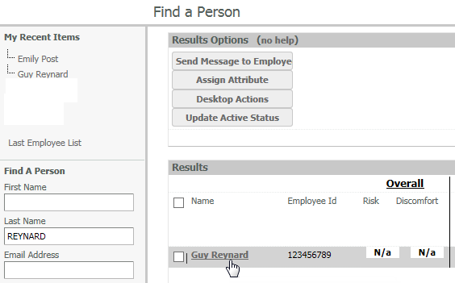
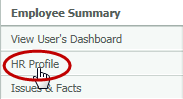
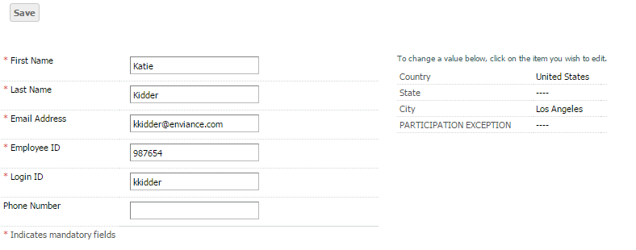
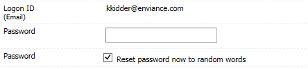
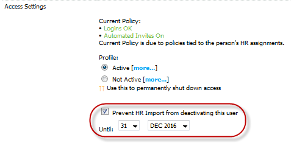
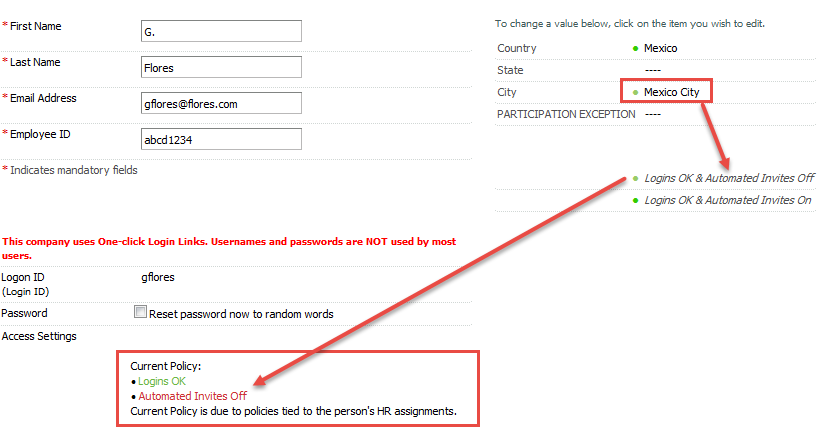

The HR profile allows the Administrator to view and edit the personal account details for the user.
User attributes may be assigned by regularly scheduled HR data feeds (HR data uploads provided by your organization). The values are updated in a user's OES HR Profile as user information changes in the HR data feed.
User attributes may also be manually changed by an OES administrator. If a OES administrator makes a manual change to a user's HR Profile attributes, the HR feed will not overwrite with the original value. But if the value in the HR data feed is different than the roginal value, the system will overwrite the attribute with the new value in the HR data feed during the upload.
Example: A user's was assigned to the Department "Sales". The user moved to another group, and a OES administrator changed the user's Department to "Marketing" manually. The next HR feed will not overwrite the value. However, if the user's Department changes again, this time in the HR feed, the HR feed will overwrite the value made by manual entry with the new value. The system will not overwrite a manual change with the previous value stored in the HR feed, but it will overwrite it if the value in the HR data feed is new.
Attributes may also be assigned in bulk to a group of users from a Employee List Report. See Assign HR Attributes in Bulk .
Any users not included in the HR data feed (such as contractors) must be manually added to the OES system by an OES Administrator. See Adding OES Users .
To edit a user's HR Profile:
From the left menu on the Administrator Home page use the search to find the user. See Manage Users.
Click the user name to open the user's Employee Summary.

Click HR Profile in the menu on the left.

OR, in the HR Profile box click Edit HR Profile.
The user's HR Profile is displayed in edit mode. See below for explanations of all fields.

After editing any fields, click Save to save your changes.
Account Identifying information:
Note: The Login ID is not the same as the Logon ID. The Logon ID is a login identification field, typically an email address, employee ID or other identifying field from the employee data feed.
Password Reset: To reset a user's password you can either manually enter a new (temporary) password or reset the password to a system-generated random string. The user will automatically be sent an email with the temporary password within a few minutes. The user will be asked to enter a permanent password after login. The temporary password expires after 7 days if the user does not log in and change it.

Access Settings
Current Policy: Displays user's current access policy. See HR and Custom Attributes below for more info. Also see Attributes and Policies for details on how this is set and determined by the system.
Active Status: Status is set to Active by default. When a user leaves the organization, the account will become not active with a subsequent HR data feed. The account may be made "not active" manually if a more immediate change is necessary. Accounts may be activated or de-activated in bulk through an Employee List Report. See Assign HR Attributes in Bulk
Prevent HR Import from deactivating this user (Active Status Override): Use this option to prevent HR data import from automatically deactivating a user who is not in the data feed. See explanation below.
Special Permissions: This setting, if available, should be used with caution as it overrides all other access control settings. It allows a user to log in even if their account is not active or if there are attributes with logins blocked. There are two options: 1) Logins OK and Automated invites on OR 2) Logins OK and Automated invites off. You must set a date for the special permissions to expire.
Prevent HR Import from deactivating this user (active Status Override)
You can use this option to prevent users from being automatically de-activated when they are not included in the HR data feed. This would apply to users whose accounts have been added manually (such as contractors). By selecting this option and giving an expiration date, the user will remain "Active" in the OES system until the expiration date passes. Once the expiration date passes, the user's account will become "Not Active" after a subsequent HR data feed, at which time the user will no longer be able to log into the OES. Therefore, if you have users who are not in the HR data feed that you want to retain as active, it is important to renew the Active Status Override prior to the expiration date. To assign this status in bulk, see Edit User Active Status .
DO NOT assign the Active Status Override to users who have been added to the system via the HR feed. Doing so will prevent the users from becoming "Not Active" if they leave the company prior to the Active Status Override expiration date.
The number of months before the Active Status Override expires is a customer preference. We recommend a setting of "0", resulting in the current date being displayed. As such, in order to actually apply the Active Status Override, you must change the date. Best practice is to use December 31st of the following year, so that end-of-year reports can be used to readily identify users who need the expiration date renewed.

Once assigned, you will be able to view the user's Active Status Override expiration date in the user's Employee Summary. If the user does not have the Active Status Override assigned, the user will show as "Active" without an expiration date.
Assign Role: Assign role to user, if enabled. Defaults to end user role. (Not all Customer Admins have permission to assign roles.) Note that there is a hierarchy of Admin roles. A user cannot assign anyone to a role that is higher than their own role.
HR and Custom Attributes: HR and Custom attributes are shown on the right side of the page in the Employee Summary and in HR Profile. HR Attributes are those fields that come from your organization via the HR data feed. Other custom attributes may have been created to allow additional control over accounts in the system. To change a value, navigate to the HR Profile and click on the current value or '----' if blank. Attributes that appear with a colored dot in front of them indicate that they have a specific access policy associated with them. Red dots indicate more restrictive policies, green more permissive (with shades inbetween). The actual policy associated with these values is listed below the attribute list. Access is determined by the combination of policies, with the most restrictive overriding all others. See Attributes and Policies for details.
Important: When changing values for attributes that are associated with access policies, you must be aware of the potential conflicts that might affect a user's access to the system.
